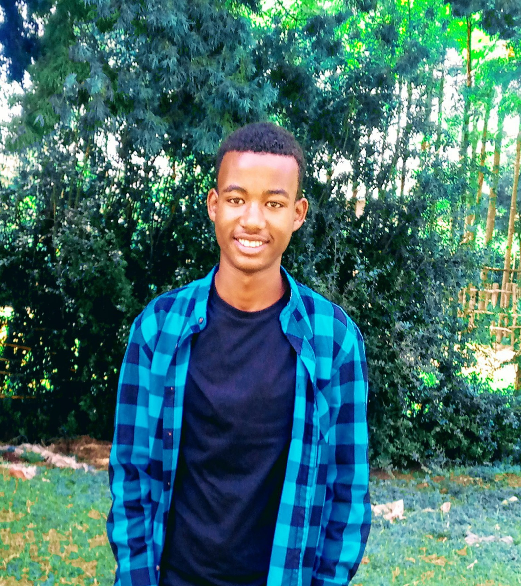

My name is Tedila Abebe Mendolo. I was born on March 10, 1996 E.C in Kedida Gamela Woreda. When I was 4 years old, I began my KG school at Durame Misrak Chora Kindergarten school. Then I completed my secondary school at Higa Model Boarding School(HMBS). Now I am grade 12 student at HMBS and I am one of the Candidates for 2015's Ethiopian University Entrance Examination(EUEE). If God's will I want to score the best and I want to be a Doctor.